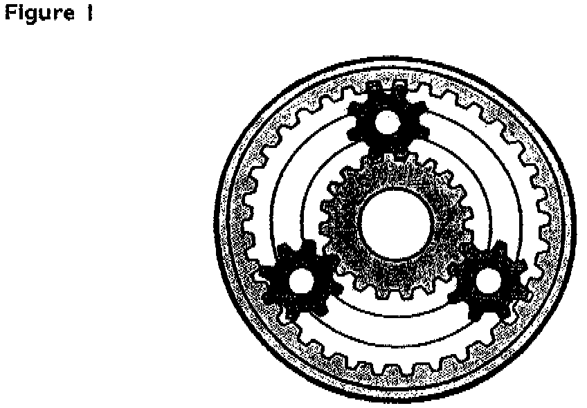
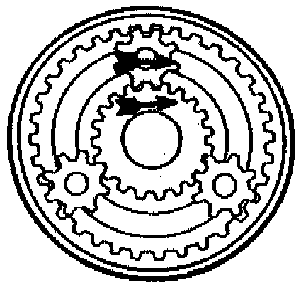
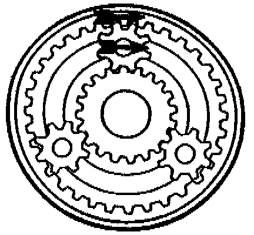
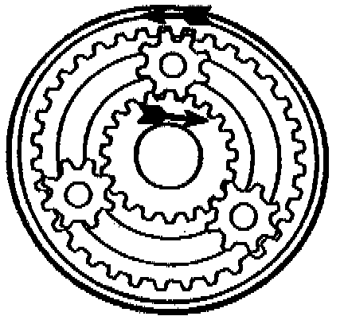
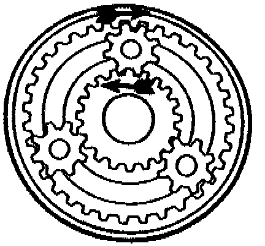

A/T - Math Part II
TSB: 89-30 (Oct)SUBJECT: TRANSMISSION MATH - Part II
Planetary Gear Sets:
Knowing the gear ratios of an automatic transmission can come in handy at times -- especially when you're swapping transmission types or differentials. The problem is in trying to find a manual with the ratios listed. What do you do?
BREAK OUT THE CALCULATOR, AND FIGURE IT OUT.
When you figure the gear ratios for planetary gear sets, it is just like any other gear set. You divide the output gear by the input. Also, don't count the idler gear; planetaries are considered idler gears. Set them aside, their tooth count doesn't matter.

Now for the tricky part -- which gear do you consider the input, and which one the output? Figure 1 shows a planetary gear set with 34 teeth on the ring gear and 20 teeth on the Sun gear.
FOR GEAR REDUCTION, one of the gears is held stationary, and the other is used for the INPUT. THE TOOTH COUNT FOR THE OUTPUT GEAR IS THE SUM OF THE SUN GEAR AND THE RING GEAR, so if you are using the Sun gear for the input, then the ring gear + the Sun gear divided by the Sun gear = Ratio.

EXAMPLE: 34 + 20 divided by 20 = 2.7:1 This is how 1st gear on a THM 700 R4 is calculated. (See figure)
When the ring gear is used as the input, then the ring gear + the Sun gear divided by the ring gear = Ratio.
EXAMPLE: 34 + 20 divided by 34 = 1.58 This is now 2nd gear on a THM 350 is calculated. (See figure)
FOR OVERDRIVE, the sum of the ring gear + Sun gear is used for the input tooth count.
So, IF THE SUN GEAR IS HELD, then the ring gear divided by (ring gear + Sun gear) = Ratio
EXAMPLE: 34 divided by (34 + 20) = .63:1 Look familiar?

The A4LD, the THM 200-4R, the A-140E, the A-40D, the THM 325-4L are some of the units that use this method of getting overdrive. (See figure)
If the ring gear is held, then the Sun gear divided by (ring gear = Sun gear) = Ratio
EXAMPLE: 20 divided by (34 + 20) = .37:1 (See figure)
REVERSE IS THE EASIEST - THE PLANET IS HELD.
The Sun gear is the input, and the ring gear is the output. The formula for this is: The ring gear divided by the Sun gear = Ratio.

EXAMPLE: 34 divided by 20 = 1.7 (See figure)
Occasionally, the ring gear is used as the input, and the Sun gear as the output.
The formula for this is: The Sun gear divided by the ring gear = Ratio.

EXAMPLE: 20 divided by 34 = .59
(See figure)
Notice that the output is overdriven.
A transmission using this method must use another planetary gear set to reduce the output. The Mercedes W3A-040 is a good example of this
To get more than one gear forward and a reverse, requires multiple, or compound planetary gear sets.
Two of the most common of these are the SIMPSON GEAR SET, used in transmissions like the THM 350, the Ford C-4, and the TF 6 & 8, and the RAVIGNEAUX GEAR SET, found in transmissions such as the FMX, the AOD, and the T-35.
Figuring out all the ratios for these transmissions is a little tricky, so I'll give you the formulas, and let you figure out how these formulas were derived.
THE SIMPSON GEAR SET:
For this example I'll use a THM 200, which has 74 TEETH ON THE FRONT RING GEAR, 42 TEETH ON THE FRONT SUN GEAR, 30 TEETH ON THE REAR SUN GEAR, AND 62 TEETH ON THE REAR RING GEAR.
The formula for 1ST GEAR is: rear ring divided by rear Sun x front Sun plus front Sun + front ring divided by front ring.
EXAMPLE: On the THM 200, it would be:
62 divided by 30 x 42 + 42 + 74 divided by 74 = 2.74:1
SECOND GEAR is easy: Front Sun + front ring divided by front ring.
EXAMPLE: 42 + 74 divided by 74 = 1.57:1
THIRD GEAR is Direct Drive, or 1:1
REVERSE is rear ring divided by rear Sun
EXAMPLE: 62 divided by 30 = 2.06
THM 440-T4 (BACKWARDS SIMPSON):
The THM 440 T4 is sort of a backwards version of a Simpson gear set, and although it looks complicated, it really is very simple.
The front Sun gear has 26 teeth, while the rear Sun gear has 42. The front ring gear has 62 teeth, but keep in mind that it is part of the rear carrier, just as the rear ring gear is part of the front carrier, with a tooth count of 74.
As I said earlier, the THM 440 T4 is sort of a backwards version of a Simpson gear set, so in figuring the ratio for 1ST GEAR -- it is identical, except you substitute the words "front" and "rear" in the appropriate places. Front ring divided by front sun x rear Sun + rear Sun + rear ring divided by rear ring = Ratio
EXAMPLE: 62 divided by 26 x 42 + 42 + 74 divided by 74 = 2.92:1
2ND GEAR: Rear Sun + rear ring divided by rear ring
Example: 42 + 74 divided by 74 = 1.57:1
3RD GEAR: Direct Drive, or 1:1
4TH GEAR: Front ring divided by (front Sun + front ring = Ratio
EXAMPLE: 62 divided by (26 + 62) = .74:1
RAVIGNEAUX GEAR SET:
This is considered a compound gear set, and for this example I'll use an AOD, which has:
36 teeth on the front Sun gear
30 teeth on the rear Sun gear, and
72 teeth on the ring gear
The formula for first gear is: Ring gear divided by rear Sun gear = Ratio
EXAMPLE: 72 divided by 30 = 2.4:1
SECOND GEAR formula is: Rear Sun + front Sun divided by rear Sun x Ring divided by (Ring + front Sun)
EXAMPLE: (30 + 36) divided by 30 x 72 divided by (72 + 36) = Ratio 66 divided by 30 x 72 divided by 108 = 1.47
THIRD GEAR is Direct, or 1:1
FOURTH GEAR is: Ring gear divided by (ring gear + front Sun gear) = Ratio
EXAMPLE: 72 divided by (72 + 36) = .67:1
REVERSE on a Ford AOD is: Ring gear divided by front Sun gear.
EXAMPLE: 72 divided by 36 = 2:1